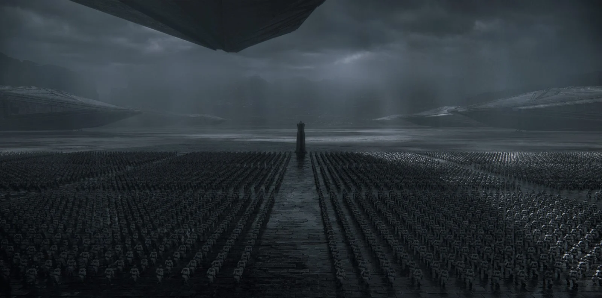

Les univers associés a eve online
Les univers proches a ceux d'EVE Online :
- Star Wars
- Star Citizen
- Elite Dangerous
- Stellar Blade
- Dunes
- La Machine à explorer le temps
- Guerre des mondes
- La Cité et les Astres
- Silo
L'univers le plus proche selon moi même :
Pour moi dune et l'univers le plus proche de celui d'eve online car : ils se passe dans un univers spacial, il y a plusieurs factions dont certaines majeur/mineurs, il y a des centres d'interet telle que l'épices qui permet le voyage spacial comme les gates d'EVE Online, Il y a différent courant de pensée et des emprises religieuses. Et tout cela se passe longtemps après notre époque
